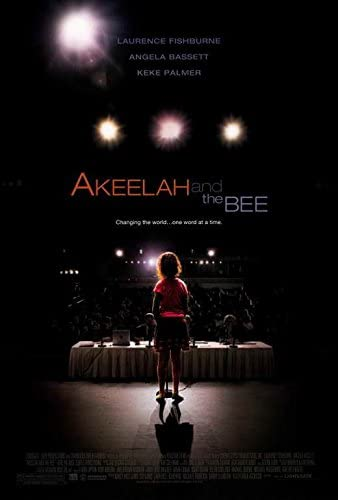

The first selection of 5 films are stories depicting predominately black characters and families. The first, Get Out, is about a young African-American man visiting his white girlfriend’s parents for the first time and the disturbing discoveries he makes. Next, Akeelah and the Bee traces the journey of an 11-year-old girl with a knack for spelling who sets her mind on the Scripps National Spelling Bee. The third film, Guess Who’s Coming to Dinner, depicts the first meeting between a white woman and her black fiancé and her wealthy, liberal parents. Next, Hidden Figures is about 3 African-American women who worked at NASA during the Space Race. Finally, Moonlight depicts three life stages of an African-American boy, including his childhood, adolescence, and adulthood.


The second group of 4 films are stories that include a diverse cast, including Asian, Latinx, and Indian characters. First, Crazy Rich Asians is about a Chinese-American woman who visits her boyfriend’s family in Singapore and discovers that they are one of the richest families on the island. Next, West Side Story tells the story of two New York Gangs: the Jets, a group of whites, and the Sharks, a group of Puerto Ricans. Then, Roma is the story of a housekeeper working for a family in Mexico and the events that unfold in both her personal and professional life. Finally, Life of Pi is a movie about an Indian boy who survives a shipwreck and must deal with the only other survivor, a Bengal tiger.